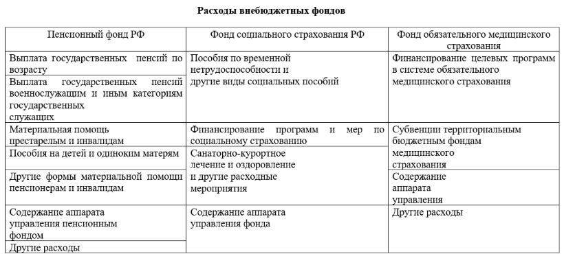

Цель: изучив учебный элемент, Вы сможете:
Налоговый кодекс РФ, часть 2, глава 24 «Единый социальный налог»;
В современных условиях внебюджетные фонды, с одной стороны, представляют собой механизм перераспределения национального дохода с целью защиты интересов отдельных социальных групп населения, решения конкретных задач экономического характера, с другой – выступают как совокупность финансовых средств целевого назначения, находящихся в руках органов власти.
Государственные внебюджетные фонды – это целевые централизованные фонды финансовых ресурсов, формируемые за счёт обязательных платежей и отчислений юридических и физических лиц и предназначенные для реализации конституционных прав граждан на пенсионное обеспечение, социальное страхование, социальное обеспечение, охрану здоровья и медицинскую помощь.
Регулирование деятельности внебюджетных фондов находится в ведении государственных органов власти – федеральных, региональных, местных.
В состав государственных внебюджетных фондов входят: Пенсионный фонд РФ, Фонд социального страхования, Фонд обязательного медицинского страхования.
Классификация фондов:
- по правовому положению фонды делятся на государственные и местные;
- по целям использования различают фонды экономические (внебюджетные фонды территориального (регионального) развития и ведомственные (отраслевые, межотраслевые) внебюджетные фонды) и фонды социального назначения.
Пенсионный фонд РФ (ПФ РФ) – это фонд денежных средств, основной целью которого является социальное обеспечение населения страны по возрасту, что выражается, прежде всего, в выплате государственных пенсий и пособий;
Плательщиками страховых взносов являются российские и иностранные юридические лица. Все плательщики (за исключением работающих граждан) должны быть зарегистрированы в Пенсионном фонде РФ.
Расходы внебюджетных фондов представлены в таблице 3.
Фонд социального страхования РФ (ФСС РФ) – второй по значению внебюджетный фонд по социальной поддержке граждан в Российской Федерации. Создан в 1992 году.
Фонд обязательного медицинского страхования (ФОМС РФ) создан в 1991 году.
Средства ФОМС РФ предназначены для реализации следующих задач:
- финансирования мероприятий по разработке и реализации целевых программ, утверждённых Правительством РФ и другими органами управления;
- обеспечения профессиональной подготовки кадров в сфере здравоохранения;
- финансирования отдельных территориально-административных образований
с целью выравнивания условий по оказанию медицинской помощи населению по программе обязательного медицинского страхования;
- финансирования научных исследований в области здравоохранения;
- развития материально-технической базы учреждений здравоохранения;
- оплаты дорогостоящих видов медицинского лечения;
- финансирования медицинских учреждений, которые оказывают помощь при социально значимых заболеваниях;
- оказания медицинской помощи при массовых заболеваниях, в зонах стихийных бедствий, катастроф и других целей в области охраны здоровья граждан.
Источники финансирования мероприятий по линии ФОМС РФ:
- средства, получаемые из бюджетов различных уровней;
- средства государственных и общественных организаций;
- страховые взносы организаций;
- личные денежные средства граждан;
- добровольные взносы физических и юридических лиц;
- доходы от ценных бумаг;
- кредиты банков и других кредитных учреждений;
- прочие источники.
При недостаточности средств, фондам выдаётся дотация из федерального бюджета.